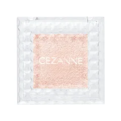

まず1つ（上まぶたに塗っても消える人）

セザンヌ
シングルカラーアイシャドウ 01 パールベージュ
1.0g・パールの単色・しっとりした質感
¥440税込・出典掲載価格
書き込みの声
- 選ぶ条件：色を重ねるほどまぶたが暗く重く見える奥二重・一重の人。上まぶたは色をやめて光だけにする
- ほとんど色の無いパールだけを足すほうが、二重の線の場所がわかりやすかった、という声がありました
- 塗る場所：目を開けたときに見えている部分から、その上の骨のあたりまで。目を閉じて塗るなら二重の線より少し上まで
気になる声気になる点：まぶたが厚い人は、全体はつや消しにしてパールは黒目の上だけにするほうが合うことがあります
販売価格・容量・送料はリンク先でご確認ください